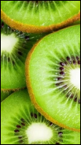

Kiwi verde

6lkcal, por 100g
Originários da China, os Kiwiws foram levados por missionários, no início dos anos 1900, para a Nova Zelândia, onde passaram a ser cultivados
Pontução nutricional: 54
Originários da China, os Kiwiws foram levados por missionários, no início dos anos 1900, para a Nova Zelândia, onde passaram a ser cultivados
Pontução nutricional: 54